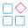

CTF工具集合¶
该页面基于项目【CTFtools-wiki】https://github.com/ProbiusOfficial/CTFtools-wiki 若本项目对您有所帮助，还劳烦点个 Star ⭐ 支持一下~谢谢！！！
食用说明¶
该合集将尽力做到对各个阶段的CTFer都有所帮助，您可以依照各方向环境配置文档在这里寻找各个工具的下载地址和使用方法。
💻常用软件¶
- 该栏目提供的工具只为提高效率，可能与项目核心有一定偏差。
- 项目Release提供封装好的基础工具箱，工具箱将基于 Maye Lite 进行相对路径封装，以便于解决路径问题，做到开箱即用。
| 项目名称 | 项目简介 | 项目地址 | 项目文档 |
|---|---|---|---|
| Maye Lite | 专注于文件快速启动的简洁、轻量级工具 |
GitHub | https://t.arae.cc/p/25804.html |
| uTools | 一个极简、插件化的现代桌面软件。 |
官网 | https://u.tools/docs/guide/about-uTools.html |
| Everything | 一款强大的本地文件索引和搜索工具 |
官网 | / |
欢迎在Issues中推荐更多的效率工具，但是请注意，适合自己的工具才是最好的，您并不需要下载所有的工具，请勿持有 ALL IN 思想。
🏴 CTF 工具合集¶
🪐 环境基础¶
| 项目名称 | Usage | 项目地址 | 使用文档 |
|---|---|---|---|
| VSCode | 最好用 最轻量的 文本编辑器 依靠扩展可实现包括但不限于 IDE 各种功能 |
官网 | / |
| VMware Workstation | 虚拟机软件 |
官网 | / |
| PyCharm | Python 集成开发环境(IDE) |
官网 | / |
| IDEA | Java 集成开发环境(IDE) |
官网 | / |
| PHPStorm | PHP 集成开发环境(IDE) |
官网 | / |
| PHPStudy | Web环境 (Apache / Nginx + FTP + MySQL) 快速部署 常用于 Web初学阶段的一些本地web页面的搭建 |
官网 | / |
| Docker | 容器服务 常用于 题目本地搭建测试 靶场环境，漏洞复现环境搭建等 除了静态附件题目，几乎所有的CTF题目都依赖Docker |
官网 | / |
| Navicat | 优秀的数据库 管理 操作 调试 以及 可视化软件 |
官网 | / |
| Watt Toolkit | GitHub Discord 部分谷歌服务 页面元素CDN 访问加速 | 不是用来让你打游戏的啊喂(#`O′)！ |
GitHub | / |
| Clash | 部分服务访问加速 | 我也只能说这么多 |
GitHub | / |
🌐 Web | Web安全¶
- 注意 工具包含 应用程序 和 浏览器插件

- 以下为Web常用工具或者说基础工具，一些漏洞利用程序将不会被归纳到这，您可以 点击此处 查看后方的CTF项目归档来查找更多工具。
| 项目名称 | Usage | 项目地址 | 使用文档 | 其他 |
|---|---|---|---|---|
| hackbar |
浏览器插件，能够在页面上直接完成 请求/响应内容编辑，完成各种包括但是不限于伪造的工作。 | 谷歌商店 GitHub |
/ | / |
| Proxy SwitchyOmega |
代理管理软件，方便一个浏览器多个代理端口的切换。 | GitHub | / | / |
| Wappalyzer |
页面技术识别软件，方便快速定位页面的框架技术等信息 | 官网 | / | / |
| Burp Suite | 代理抓包软件，用于Web应用程序的渗透测试和攻击 |
官网 | / | / |
| Antsword | 开源Webshell管理工具 |
GitHub | / | / |
| dirsearch | 目录扫描工具 |
GitHub | / | / |
| SQLMap | 自动化的SQL注入利用工具 |
GitHub | / | / |
| JD-GUI | Jar包反编译工具 |
GitHub | / | / |
| Ysoserial | Java 反序列漏洞利用工具 |
GitHub | / | / |
🕸 MISC | 杂项¶
❆ 基础工具¶
- 基础语言 | 模块
| 项目名称 | Usage | 项目地址 | 文档 |
|---|---|---|---|
| Python | MISC方向中用途最广的语言。 | 官网 | / |
- 编码 / 解码 / 解密 工具
| 项目名称 | Usage | 项目地址 | 文档 |
|---|---|---|---|
| CyberChef | 近乎全能的编码解码工具。 |
官网 国内中文镜像站 |
/ |
| Ciphey | 自动化解密工具。 | GitHub | |
| CTFCrackTools | 国内首个CTF工具框架,内涵多个主流密码加解密，支持添加支持Python编写的插件。 | GitHub | / |
- 文本 / Hex 编辑 | 文件工具
| 项目名称 | Usage | 项目地址 | 文档 |
|---|---|---|---|
| 010 Editor | 专业的文本编辑器和16进制编辑器，可通过加载模块脚本，解析文件结构。 |
官网 | / |
| lmHex | 开源的16进制编辑器。 |
GitHub | |
| WinHex | 16 进制编辑器为核心的数据处理软件。 |
官网 | / |
| Binwalk | 可识别文件分离提取工具，常用于从文件中提取隐写到其中的其他文件。 | GitHub | / |
| Foremost | 用于提取一个文件中包含的多个文件。 | / | / |
- 隐写工具 | 图像 / 音频
| 项目名称 | Usage | 项目地址 | 文档 |
|---|---|---|---|
| Qrazybox |
二维码分析和恢复 |
GitHub Usagepage |
|
| QR Research | 专业的二维码扫描识别软件，支持多个纠错等级，掩码选项(已停止维护)。 |
/ | / |
| UleadGIFAnimator | 高级GIF编辑器 |
/ | 吾爱论坛 |
| -----图像类 | |||
| Stegsolve | 图像分析工具。 |
GitHub | / |
| TweakPNG | 用于检查和修改PNG图像文件 |类似于010的Png Template功能 |
官网 | / |
| BlindWaterMark(python) | 基于 python 的图像盲水印 | GitHub | / |
| BlindWatermark(java) | 基于 java 的图像盲水印 | GitHub | / |
| WaterMark(隐藏水印) | 图像隐写工具，在频域添加数字水印 |
/ | 吾爱论坛 |
| WaterMarkH | 单图盲水印(频域隐写)工具 | / | / |
| zsteg | PNG 和 BMP 图片隐写 | GitHub | / |
| StegoVeritas | 隐写工具 | GitHub | / |
| Stegdetect | 检测jpeg图像隐写工具，搭配stegbreak食用更佳 | GitHub | / |
| -----音频类 | |||
| Steghide | 将文件隐藏到**图片或音频**中的工具 |
官网 | / |
| Audacity | 多轨音频处理软件。 |
GitHub | / |
| Mp3stego | 音频隐写提取工具 |
官网 | / |
| Silenteye | 音频/图像隐写工具 |
官网 | / |
| DeepSound | 可以将文件加密保存到一段声音文件中 |
官网 | / |
| Mp3tag | 音频文件元资料编辑器 |
官网 | / |
- 取证工具
| 项目名称 | Usage | 项目地址 | 文档 |
|---|---|---|---|
| Forensics-Wiki | 取证综合资料库 |
官网 | / |
| -----密码爆破 | |||
| ZipCenOp | 伪加密加/解密工具 |
GitHub | / |
| ARCHPR | 压缩文件密码暴力破解工具。 |
/ | / |
| Ziperello | zip压缩包密码恢复软件。 |
/ | / |
| Aopr | Office文件密码暴力破解工具。 |
/ | / |
| Passware Kit Forensic | 十分强大的解密工具，各类文件/磁盘密码爆破，密钥搜索等 | / | - 依依的汉化包 - 汉化版 |
| Hashcat | 高性能，GPU/CPU 兼容的本地密码破解，支持多种不同格式 | GitHub | / |
| John the Ripper | 简单易用的离线破解 | GitHub | / |
| Hydra | 远程或在线密码的并行暴力破解。 | GitHub | / |
| -----流量分析 | |||
| Wireshark | 流量分析取证软件。 |
官网 | / |
| -----内存 磁盘 取证 | |||
| Volatility | 内存分析取证软件。 |
官网 GitHub |
/ |
| MemProcFS | 新型内存取证框架 |
GitHub | / |
| NtfsStreamsEditor | NTFS流分析 |
官网 | / |
| R-Studio | 内存取证tick+磁盘文件恢复分析 |
官网 | / |
| AutoPsy | 用来分析磁盘映像和恢复文件的开源取证工具 |
官网 | / |
| RegistryExplorer | 注册表文件分析器 |
官网 | / |
| PowerToy | 注册表文件分析器 |
GitHub | / |
❆ 解题工具¶
⚠请不要过分依赖下面工具！！！
-
MISC是一个对编程能力要求比较高的方向，不过大多数考点的固定衍生出比较多的"轮子"，当然轮子减少手动操作，确实是好东西，但是容易产生一些弊端，因为跳过了手动操作所以不懂原理也能梭题目，可能会导致选手略过本来应该学的原理，手动会做之后再碰到了用工具减少操作是完全没问题的，即便没有这些整合工具，用现成脚本说到底本质也是一样的。
使用工具获取便利的同时 请不要忽略对原理的学习！
| 项目名称 | Usage | 相关地址 |
|---|---|---|
| 随波逐流 | 离线加密解密，字符编码进行转换，文件隐写查看等多项功能。 | 官网 |
| PuzzleSolver | MISC 综合解题工具，由Byxs20开发。 | 神秘数字 |
❆ 开源脚本¶
🔔MISC是一个十分注重编程能力 和 脑洞 的方向，希望你能从下面的开源脚本中获得启发，也欢迎PR投稿你的开源脚本x
| 项目名称 | 项目地址 | 项目作者 |
|---|---|---|
| 自动爆破PNG图片宽高并一键修复工具 | GitHub | AabyssZG (曾哥) ) |
| 文件反转、倒置、导出工具 | GitHub | AabyssZG (曾哥) ) |
| CRC碰撞全自动化脚本 | GitHub | AabyssZG (曾哥) ) |
| 自动化内存取证_GUI版本 | GitHub | Tokeii0 (猫捉鱼) |
🔑 Crypto | 密码学¶
| 项目名称 | Usage | 项目地址 | 其它 |
|---|---|---|---|
| ---语言 | 模块 | |||
| Python | CTF密码学中离不开的语言x | 官网 | / |
| Crypto 包 | 密码学工具库，用于在Python中实现各种加密、解密和哈希算法。 | GitHub | / |
| gmpy2 包 | 包含了许多常用的数论函数和算法，适配各种大整数情况，算法效率高于原生库。 | GitHub | / |
| numpy 包 | 基于C代码实现了底层数据结构和计算函数优化，适用于处理大型数据集和高性能计算，在密码学中常用于矩阵类运算。 | GitHub 官网 |
/ |
| ---应用程序 | |||
| Sagemath | 开源的数学软件系统,整合了许多开源Python包。 | 官网 GitHub |
Sage 中文文档 |
| Yafu | 本地的因数分解程序 | 官网 | / |
| Factordb | 在线的因数分解网站 | 官网 | / |
| z3 | 开源的约束求解器，针对约束求解题型 | GitHub | / |
💫 Reverse | 逆向¶
基础工具¶
| 项目名称 | Usage | 项目地址 | 其他 |
|---|---|---|---|
| 微步沙箱 | 文件敏感操作检查 |
UsagePage | / |
| Binaryai | 基于开源项目代码匹配度在线反编译工具 |
UsagePage | / |
| IDA | 最常用的静态逆向工具 | 官网 | ida pro权威指南 |
| Ghidra | 开源的静态逆向工具，和IDA作用相同 | 官网 | / |
| Ollydbg | 同为反汇编调试器(官方已经停止维护) | 官网 | / |
| x64dbg / x32dbg | 在windows上使用的开源 x64 / x32 调试器 | 官网 | / |
| DIE | 查壳工具，拿到程序第一件事就是分析文件类型，是否有壳 | GitHub | GitHub |
| Exeinfope | 同为查壳工具 | 官网 | / |
| Cheat Engine | 对程序的内存数据进行扫描和调试。 | 官网 | / |
| GDB | 一般用于ELF的动态调试，配合插件(如pwngdb，gdb-peda)使用更佳 | 使用包管理工具安装 | Sourceware |
| z3 | 开源的约束求解器，针对约束求解题型 | GitHub | / |
| dnSpy | 强大的.NET调试、修改和反编译的工具(已停止维护) | GitHub | / |
| ----Java反编译 | |||
| JADX | 开源 更好的代码可读性 自动恢复丢失的类和方法、变量和方法名称、可以将反编译结果导出为 Eclipse 或 IDEA 项目 | GitHub | / |
| JD-GUI | 更好的代码可读性 可导出为 Java 文件或 Jar 包 | GitHub | / |
| JEB | 支持wasm 可交叉引用、可看字节码、反编译结果纯粹 | 官网 | / |
| GDA | 支持apk, dex, odex, oat, jar, class, aar文件的反编译， 支持python及java脚本自动化分析 | 官网 | / |
| Fernflower | IDEA 采用的反编译工具,支持Jar包反编译。 | GitHub | / |
| ----Python反编译 | |||
| pycdc | pyc反编译,对高版本有不错兼容性。 | GitHub | / |
| Unpy2exe | 对py2exe打包的python程序提取字节码文件 (.pyc)。 | GitHub | / |
| Pyinstxtractor | 对pyInstaller打包的python程序提取字节码文件 (.pyc)。 | GitHub | / |
| [Python]uncompyle | 用于对Python字节码文件 (.pyc) 的反汇编，将其变成python源代码。 | 官网 | / |
💥 PWN | 二进制¶
| 项目名称 | Usage | 项目地址 | 其他 |
|---|---|---|---|
| GDB | 一般用于ELF的动态调试，配合插件(如pwngdb，gdb-peda)使用更佳。 | Sourceware | / |
| Pwntools | 用于编写EXP。 | GitHub | / |
| Pwncli | 一款简单、易用的pwn题调试与攻击工具，帮助你快速编写pwn题攻击脚本，并实现本地调试和远程攻击的便捷切换，提高你在CTF比赛中调试pwn题脚本的速度与效率。 |
GitHub | / |
| Checksec | 查看二进制文件开启了哪些保护机制。 | GitHub | / |
| ROPgadget | 编写ROP的EXP时需要用到，可以帮助你寻找合适的gadgets。 | GitHub | / |
| objdump | 反汇编工具，查看文件的一些表信息，如got表。 | / | / |
| radare2 | UNIX-like reverse engineering framework and command-line toolset. | GitHub | / |
| windbg | Window 内核模式和用户模式代码调试。 | Microsoft Learn | / |
🛡 AWD / AWDP¶
| 项目名称 | Usage | 项目地址 | 其他 |
|---|---|---|---|